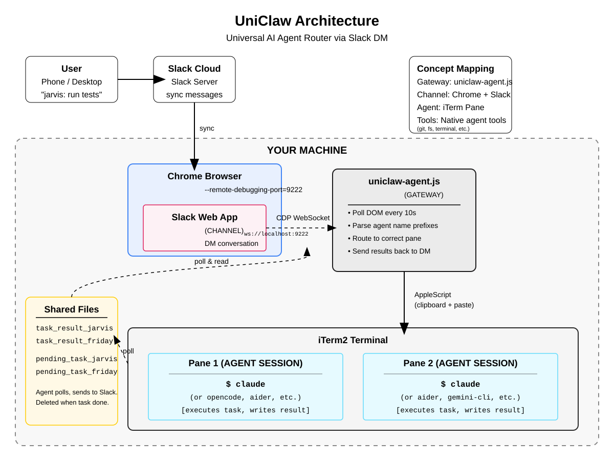
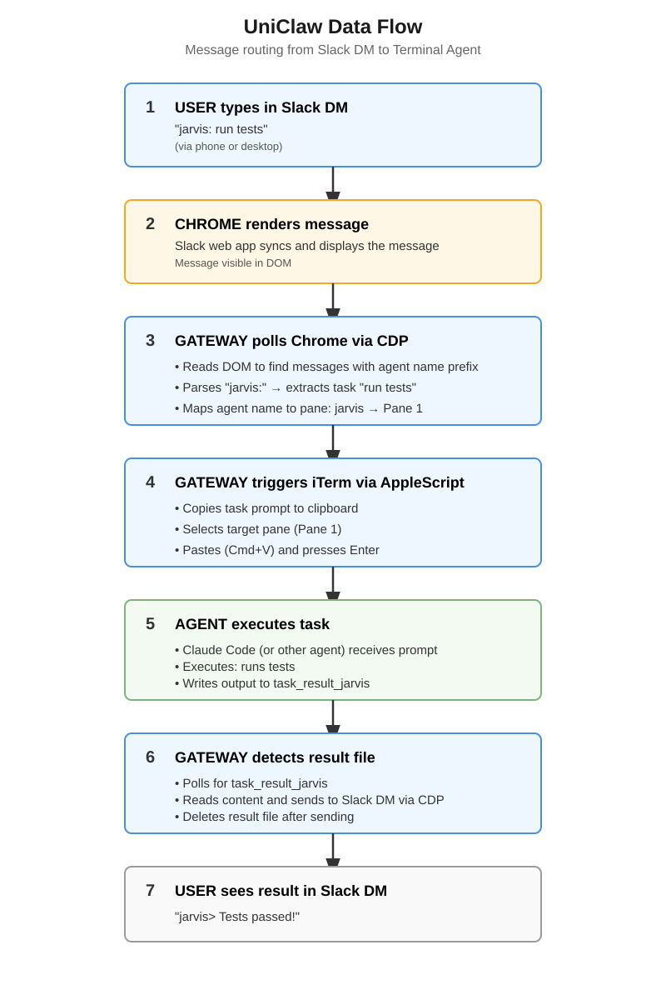

What is UniClaw?
UniClaw routes tasks from any browser-based chat (Slack, Teams, Discord, etc.) to terminal-based AI agents like Claude Code, Opencode, Aider, and more. Run multiple agents in parallel across iTerm panes — no more blocking on long tasks.
Key Features
Parallel Execution
Run jarvis on tests, friday on code review, and eleven on documentation — all at the same time.
Cross-Agent Observability
Ask friday to check jarvis's progress. Agents can read each other's output files.
Universal Agent Support
Works with Claude Code, Opencode, Aider, Codex CLI, Gemini CLI — any terminal agent.
Slack Native
Send tasks from your phone. Get chunked responses for long outputs.
Smart Routing
Prefix messages with agent names: jarvis:, friday:, eleven:
Self-Hosted
Your agents, your machine, your API keys. No external services required.
How It Works
# You send in your chat app jarvis: run all e2e tests # jarvis starts working (pane 1) # While jarvis is busy, you ask friday (pane 2): friday: what's the status of jarvis's tests? # friday reads jarvis's output file and reports back
Quick Start
# 1. Clone and setup git clone https://github.com/uniclaw-dev/uniclaw.git cd uniclaw && npm install # 2. Start debug Chrome and login to Slack ./start-chrome-debug.sh # 3. Start agents in iTerm panes # Pane 1: claude # Pane 2: claude # 4. Start UniClaw ./run.sh start # 5. Send tasks from your chat app jarvis: status
Architecture
UniClaw uses Chrome DevTools Protocol to monitor any web-based chat, then dispatches tasks to iTerm panes via AppleScript.

